fast-anything: 느린 함수만 Rust로
첫 번째는 별 4,000개 남짓을 받은 fast-anything이에요. 앱 전체를 Rust로 다시 짜는 대신, 느린 부분만 찾아 Rust로 바꿔 주는 도구예요. 저장소 소개 문구도 '전부 다시 짜지 말고 느린 5%만 다시 짜라'예요.
영상은 이 과정을 공장 그림으로 보여 줘요. 컨베이어 위에서 초록색으로 표시한 '가장 느린 함수' 하나를 골라내고, 그 함수가 어떤 값을 받아 어떤 결과를 내는지를 최대 500번 기록해요. 이 기록을 찾는 단계가 프로파일러가 하는 일이에요.
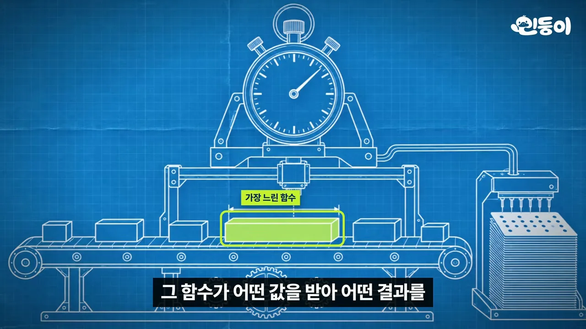
그다음 Claude Code나 Codex가 그 함수만 Rust로 옮겨요. 아래 그림은 영상이 설명한 네 단계를 한 줄로 그린 거예요. 마지막 검증에서 하나라도 어긋나면 원래 코드로 돌아가는 게 핵심이에요.
검증이 잡아낸 버그
제작자 데모에서는 AI가 옮긴 코드가 겉보기엔 멀쩡했어요. 그런데 터미널에서 fast-anything verify를 돌려 기록된 호출 500개를 다시 넣어 보니 148번이나 다른 결과가 나왔어요. 문자를 비교해야 할 곳에서 바이트를 비교하고 있었던 거예요. 영어만 넣어 보면 안 보이고, 한글 같은 다른 문자가 섞여야 드러나는 종류의 실수예요.
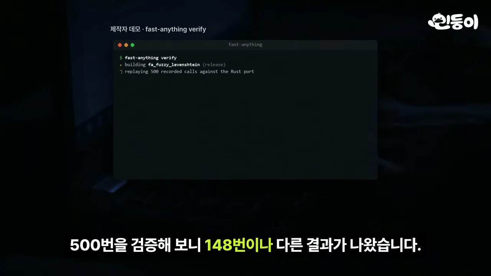
통과한 예: 4.91초 → 0.042초
검증을 통과한 예로 영상은 저장소 README의 표를 보여 줘요. 맨 윗줄이 '이름 700개에서 비슷한 이름 찾아 중복 제거'하는 파이썬 코드예요. 원래 4.91초가 42밀리초가 됐고, 표에 116배라고 적혀 있어요. 아래 줄에는 TypeScript, PHP(PHP: Hypertext Preprocessor), Go로 같은 일을 했을 때의 결과도 있어요.
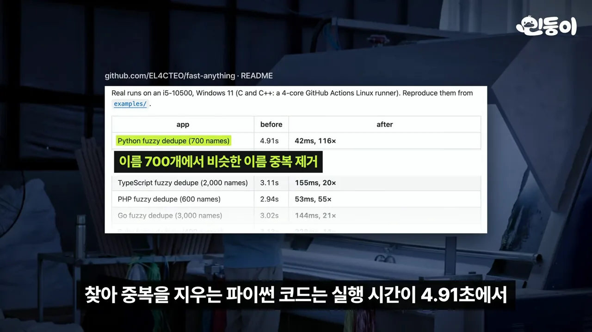
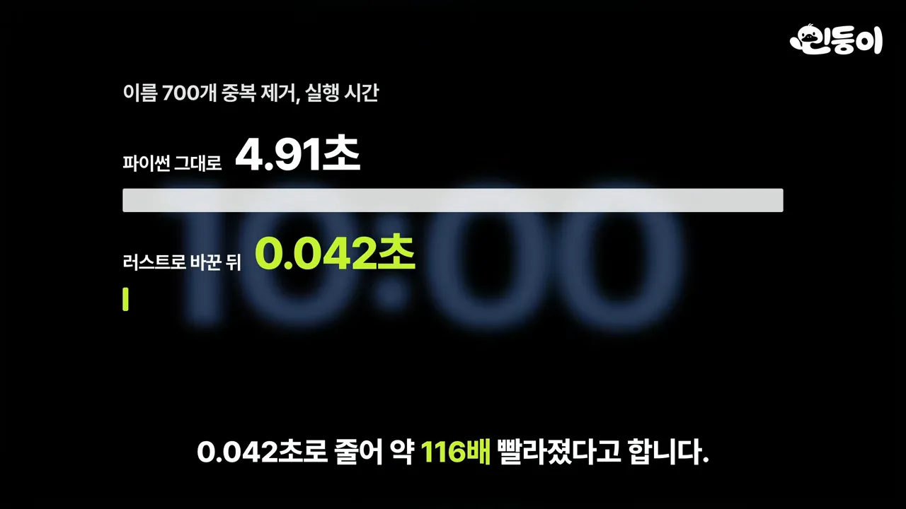
직접 써 본 다른 개발자도 후기를 남겼어요. dev.to 글 제목은 '파이썬 중복 제거가 78배 빨라졌다, 5%만 Rust로 다시 썼다'이고, 10.06초 걸리던 작업이 129밀리초가 됐대요. 함수 하나만 바꿨다고 해요.
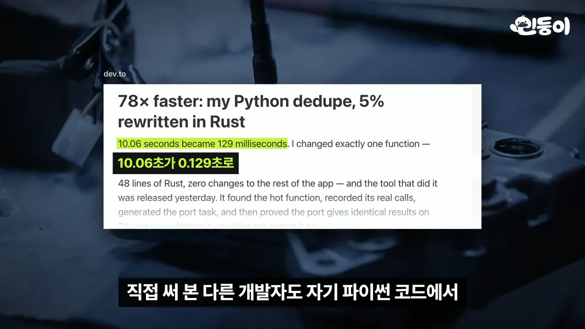
반론과 이슈
물론 반대 목소리도 있어요. 해커뉴스에서는 '프로그램이 느린 원인은 대부분 네트워크나 데이터베이스에 있다'는 반론이 나왔어요. 계산이 느린 함수가 아니라 기다리는 시간이 문제라면 Rust로 옮겨도 소용이 없다는 얘기예요.
성능을 잘못 잰다는 이슈도 올라왔어요. 화면의 이슈를 보면 도구 보고서는 '0.9x faster'라고 했는데, 실제 측정은 8.42초에서 9.27초로 늘었어요. 빨라졌다고 했지만 오히려 느려진 거예요.
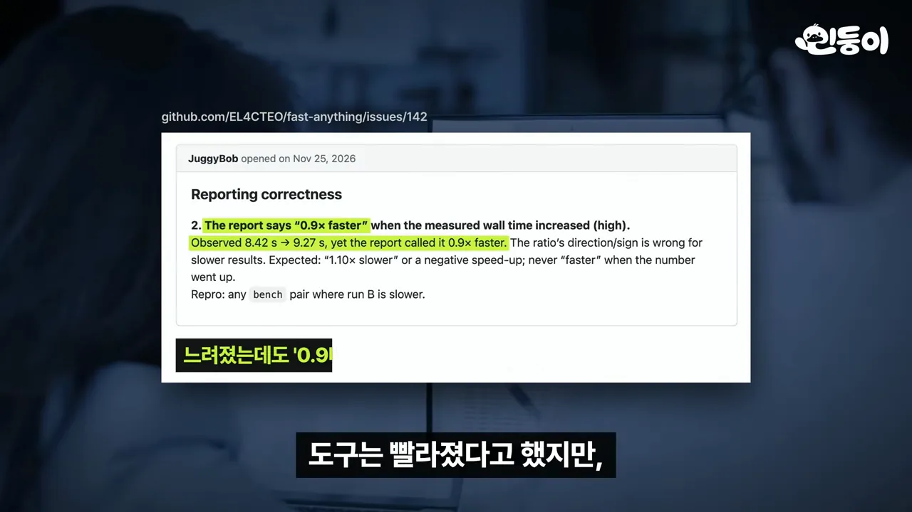
제작자는 사흘 사이 업데이트를 네 번 내며 검증 방식을 보완하고 있다고 해요. 화면은 릴리스 목록에서 최신 v0.8.8을 보여 줘요.
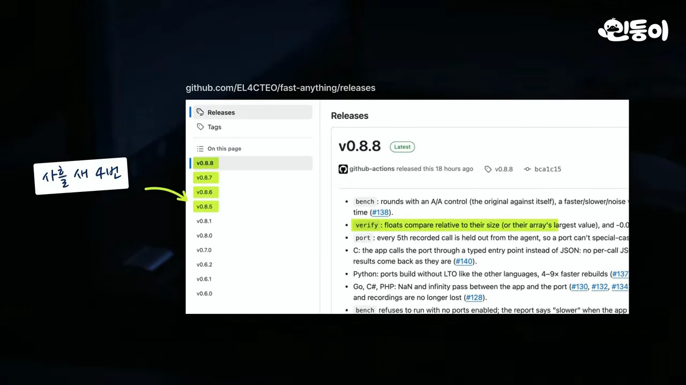
GTA 6 PC 이식 프로젝트가 1~4위
이번 주 트렌딩에서 가장 눈에 띈 건 GTA 6예요. 11월 19일 콘솔로만 나온 GTA 6를 PC에서도 실행하려는 프로젝트들이 주간 트렌딩 1위부터 4위까지 모두 차지했어요. 영상은 trendshift의 '이번 주 트렌딩' 목록으로 이걸 보여 줘요.
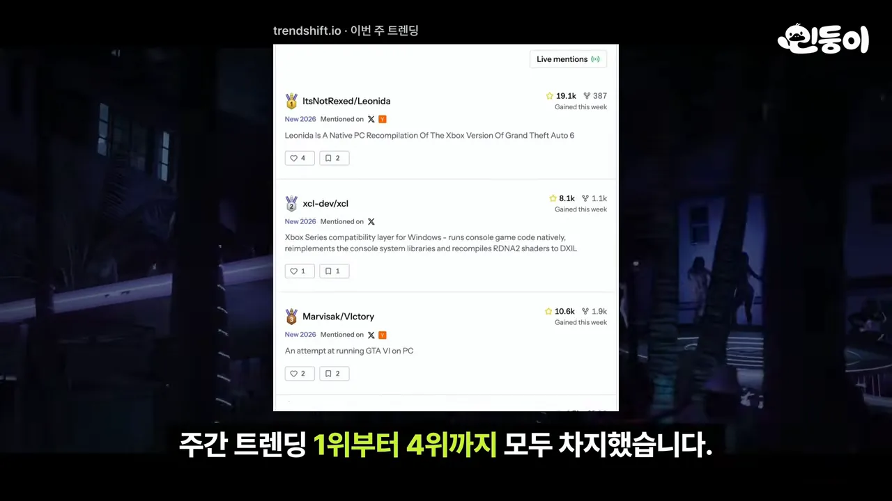
| 순위 | 저장소 | 영상이 전한 상태 |
|---|---|---|
| 1위 | Leonida | 고등학생이 만들었고 11월 20일 공개 뒤 별 3만 개 이상. 나흘 만에 저작권 신고로 삭제 |
| 2위 | XCL | 남아 있지만 초당 1~5프레임 수준 |
| 3위 | Victory | 남아 있지만 초당 1~5프레임 수준 |
| 4위 | portwatch | 위 프로젝트들의 개발 현황을 점수판처럼 보여 주는 사이트 |
1위 Leonida는 공개 나흘 만에 DMCA(Digital Millennium Copyright Act) 신고로 내려갔어요. 깃허브의 DMCA 공개 기록에는 '신고된 네트워크가 저장소 100개를 넘어, 포크를 포함한 3,007개 저장소 전체에 조치했다'는 문장이 있어요. 원본만이 아니라 복사본까지 한꺼번에 막힌 거예요.
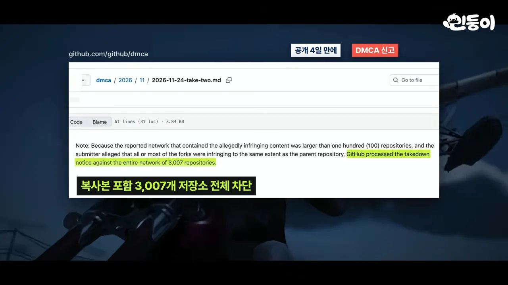
2위 XCL과 3위 Victory는 남아 있어요. 하지만 화면의 README 인용을 보면 XCL은 RTX 5090에서 3D 월드에 들어가면 약 5프레임, Victory는 초당 약 1프레임이에요. 게임으로 즐기기는 어려워요.
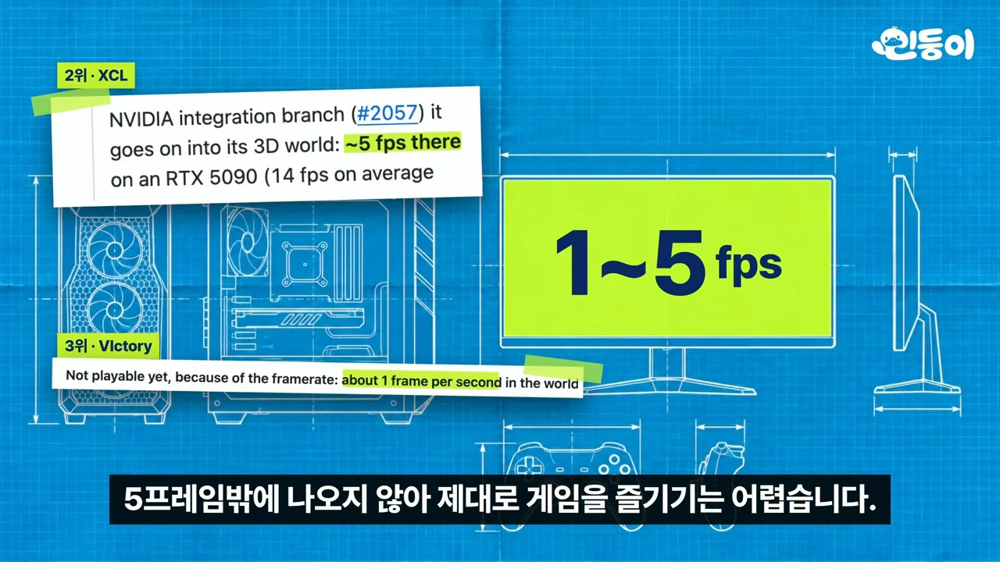
4위 portwatch는 이런 프로젝트들을 점수로 줄 세우는 사이트예요. 'The race'라는 제목 아래, 공개된 코드로 게임 실행에 얼마나 가까운지를 순위로 보여 줘요.
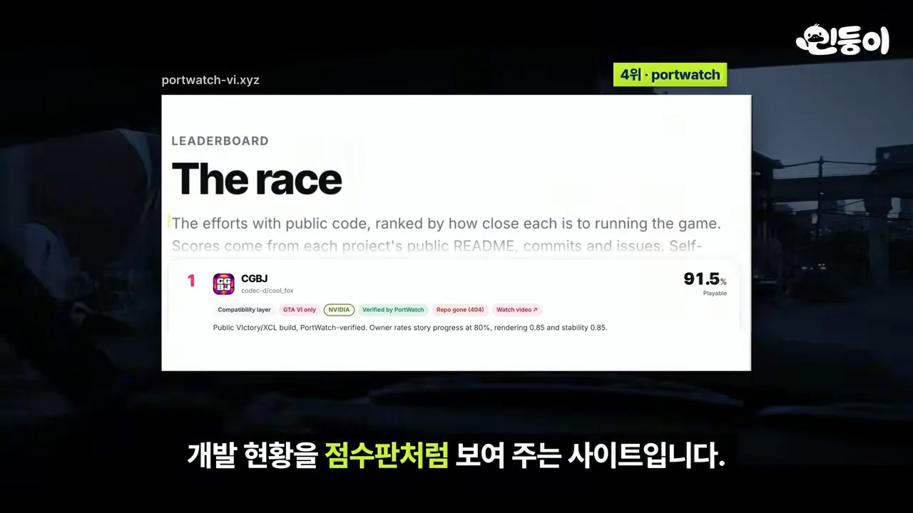
영상은 주의 하나를 덧붙여요. 이 저장소들 어디에도 GTA 6 PC판 실행 파일은 없어요. 그러니 다운로드를 유도하는 파일이나 링크는 조심해야 해요.
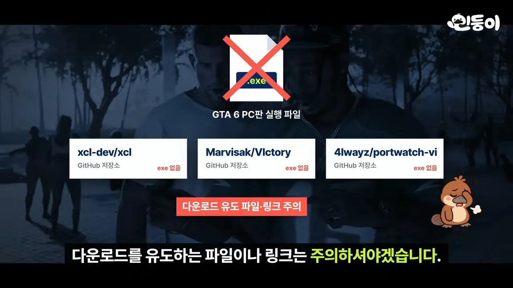
코딩 에이전트를 한 곳에서: T3 Code · Orca · Paseo
이번 주에는 코딩 에이전트 여러 개를 한 앱에서 다루는 도구가 셋 나왔어요. 먼저 차이를 표로 보고, 하나씩 볼게요.
| 도구 | 별 (영상 기준) | 중심 | 영상이 짚은 특징 |
|---|---|---|---|
| T3 Code | 8만 개 이상 (이번 주 +8,500) | 여러 에이전트를 한 화면에서 | 승인 요청을 폰 알림으로 받음. 계정 ID 수집 코드 논란 후 제거 |
| Orca | 13만 9천 개 (오늘 +1,100) | 터미널 | Orca 봇: Slack·Linear·GitHub에서 불러 PR(Pull Request)까지 |
| Paseo | 2만 5천 개 | 채팅 | 모바일 앱, 사용 통계 수집 안 함 |
T3 Code
T3 Code는 이번 주에만 별 8,500개가 늘어 전체 8만 개를 넘었어요. 사이트 첫 화면은 '코딩 에이전트를 위한 오픈소스 컨트롤 플레인'이라고 소개하고, Claude Code, Codex, Cursor 같은 에이전트를 한 화면에서 쓰게 해 줘요. 이미 구독 중인 서비스를 그대로 연결해요.
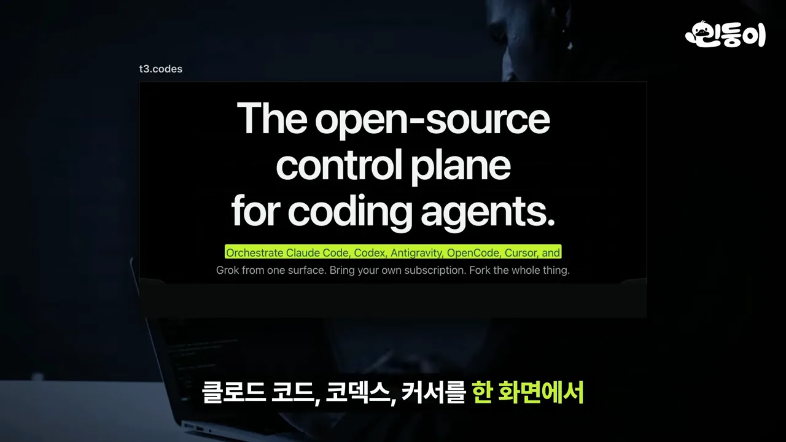
예를 들어 PC에 코딩 작업을 맡겨 두고 외출해도, AI가 중간에 승인을 요청하면 스마트폰으로 알림이 와요. 거기서 승인하면 PC에서 작업이 이어져요.
다만 이번 주에는 텔레메트리 코드가 논란이 됐어요. 화면의 글을 보면, 프롬프트나 파일 내용은 올리지 않지만 로컬의 Codex·Claude 설정 파일에서 계정 ID를 읽어 해시로 만들어 올리고 있었어요. 이 코드는 11월 25일 업데이트에서 빠졌어요.
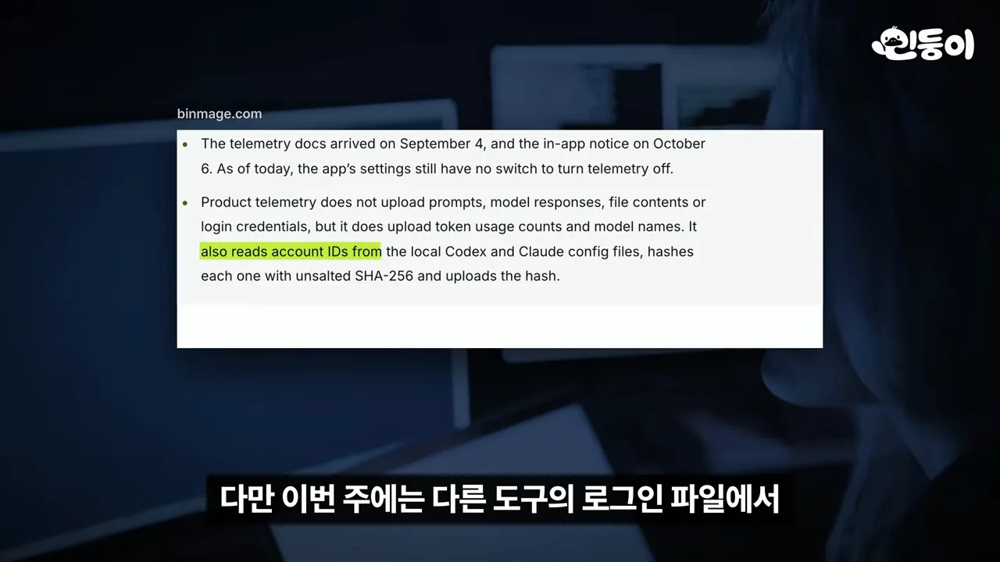
Orca
T3 Code와 비슷한 툴로 Orca도 있어요. 전체 별은 13만 9천 개이고, 오늘 하루에만 1,100개쯤 늘었어요. Claude Code나 Codex 같은 코딩 에이전트를 여러 개 띄워 두고 한 곳에서 관리하는 앱이에요. 아래 화면처럼 왼쪽에 작업 목록, 가운데에 에이전트 대화가 있어요. 터미널과 채팅 화면을 모두 지원하고, AI가 고친 코드에 바로 주석을 달아 다시 일을 시킬 수 있어요.
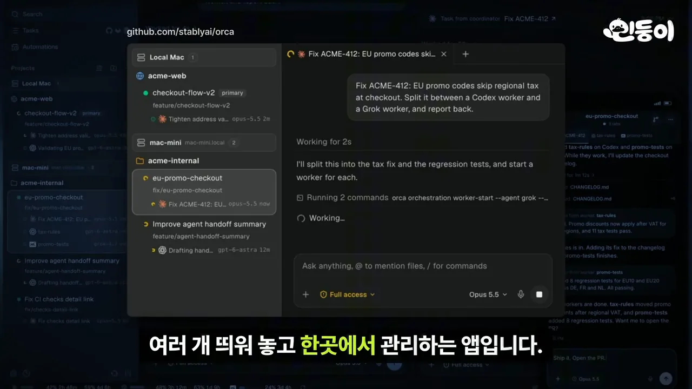
최근에 생긴 기능이 Orca 봇이에요. Slack이나 Linear, GitHub에서 봇을 불러 버그를 고쳐 달라고 하면, 내 PC에서 돌아가는 Claude Code나 Codex가 일을 받아 코드 수정, 테스트, PR 생성까지 알아서 진행해요.
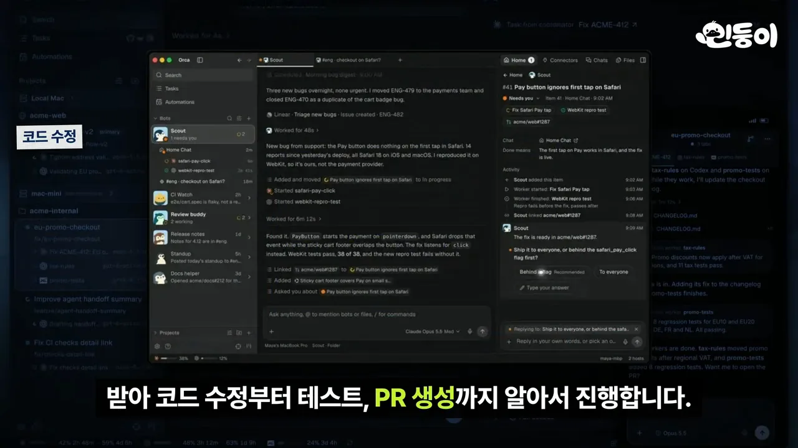
PC가 꺼져 있어도 괜찮아요. 화면의 보안 문서를 보면, 요청은 Orca Cloud를 거치고 PC가 잠들어 있으면 최대 하루 동안 보관했다가 다시 켜지면 넘겨 줘요.
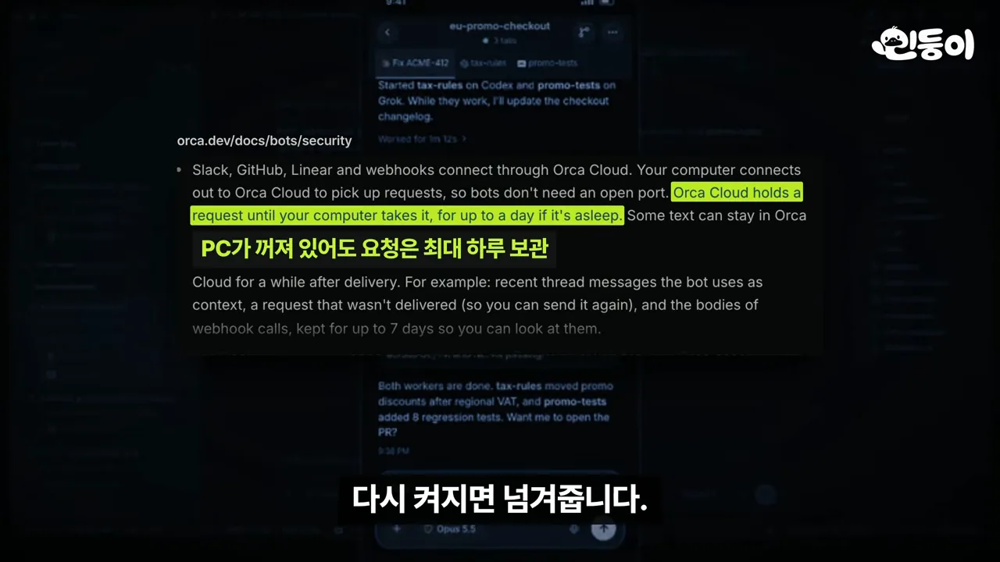
Paseo
같은 종류로 별 2만 5천 개를 받은 Paseo도 있어요. Orca가 터미널 중심이라면 Paseo는 채팅으로 AI에게 일을 맡기는 쪽이 중심이에요. 아래 화면에서도 데스크톱 창 옆에 스마트폰 화면이 함께 보여요. 모바일 앱이 있고, 사용 통계는 모으지 않아요.
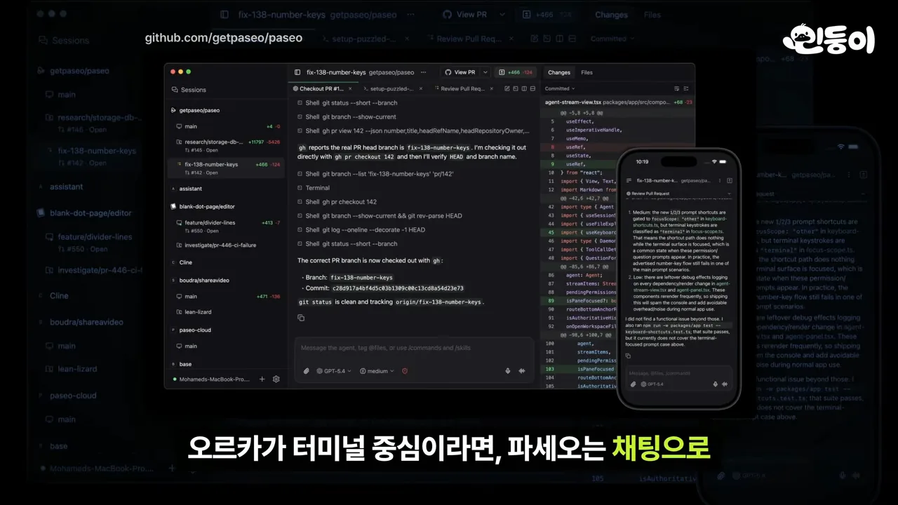
앱 테스트와 다이어그램을 AI에게
Mobile Agent Testers
이번에는 앱 테스트를 자동화하는 도구예요. 별 2,400개를 받은 Mobile Agent Testers는 AI 테스터 20명이 서로 다른 기기와 설정으로 내 앱을 동시에 테스트해요. 아래 화면은 20대 폰이 동시에 돌아가는 모습이고, 폰마다 찾은 문제 개수가 숫자로 떠 있어요.
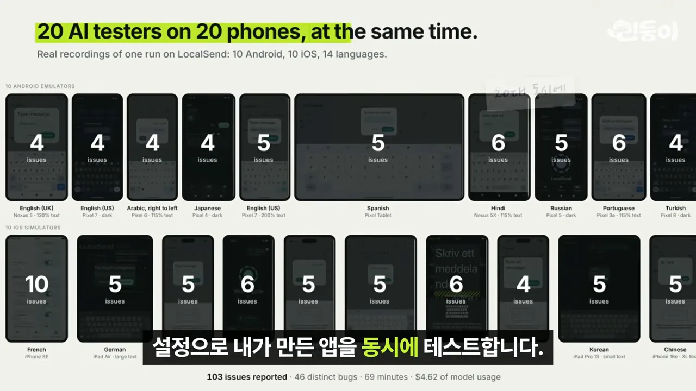
테스터마다 설정이 달라요. 한 명은 언어를 스웨덴어로 바꾸고 글자 크기를 최대로 키운 아이폰 SE에서 앱을 쓰고, 다른 한 명은 오른쪽에서 왼쪽으로 읽는 아랍어 화면에서 앱을 돌아다녀요. 사람이 하나하나 하기엔 번거로운 조합이에요.
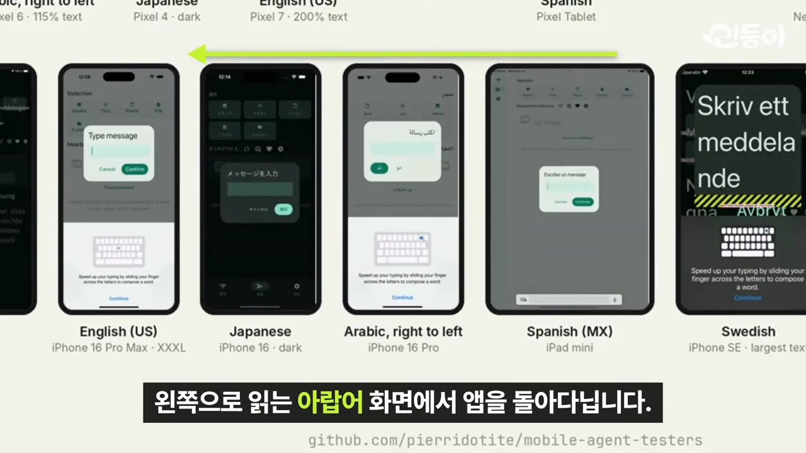
제작자가 오픈소스 앱 LocalSend를 테스트했더니 69분 만에 서로 다른 버그 46개를 찾았고, 들어간 AI 모델 비용은 4.62달러였어요.
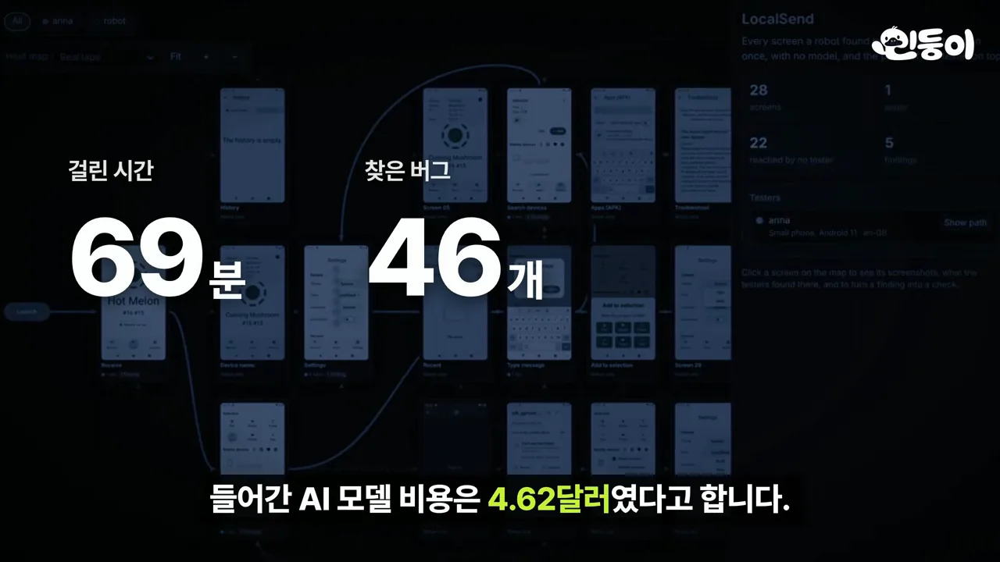
Diagram Design
다음은 별 7만 3천 개를 받은 Diagram Design이에요. Claude Code나 Codex에 설치하면 AI가 그리는 시스템 구조도나 다이어그램을 훨씬 깔끔하게 만들어 주는 스킬이에요.
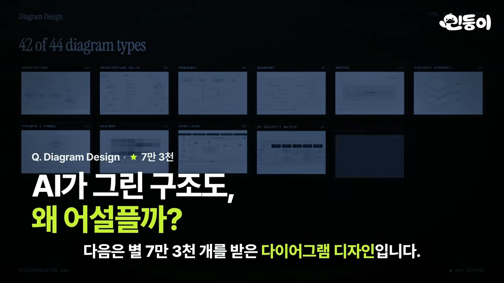
제작자의 진단은 이래요. AI는 무엇을 그려야 하는지는 이미 알지만, 어떻게 그려야 보기 좋은지는 모른대요. 그래서 디자인 감각 자체를 규칙으로 적어 스킬에 담았어요.
The model already understood the content. What it was missing was taste, so I wrote the taste down.
모델은 내용은 이미 알았어요. 없던 건 취향이었고, 그래서 취향을 글로 적었어요.
— Diagram Design README (영상 04:22)
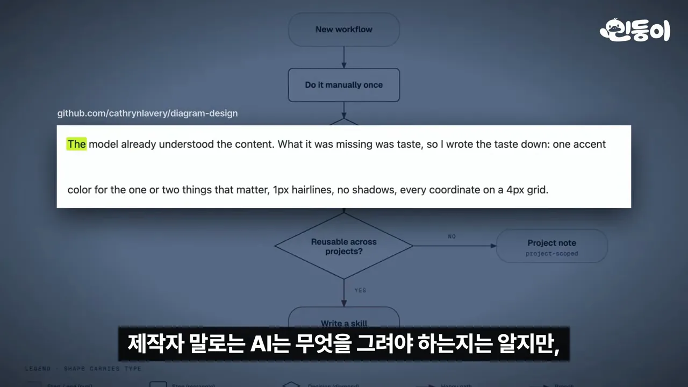
규칙은 구체적이에요. 강조색은 하나만, 선은 1픽셀 두께로, 그림자는 빼고, 모든 위치는 4픽셀 단위 격자에 맞춰요. 아래 예시 그림에서 초록 테두리로 강조한 상자가 딱 하나뿐인 걸 보면 돼요.
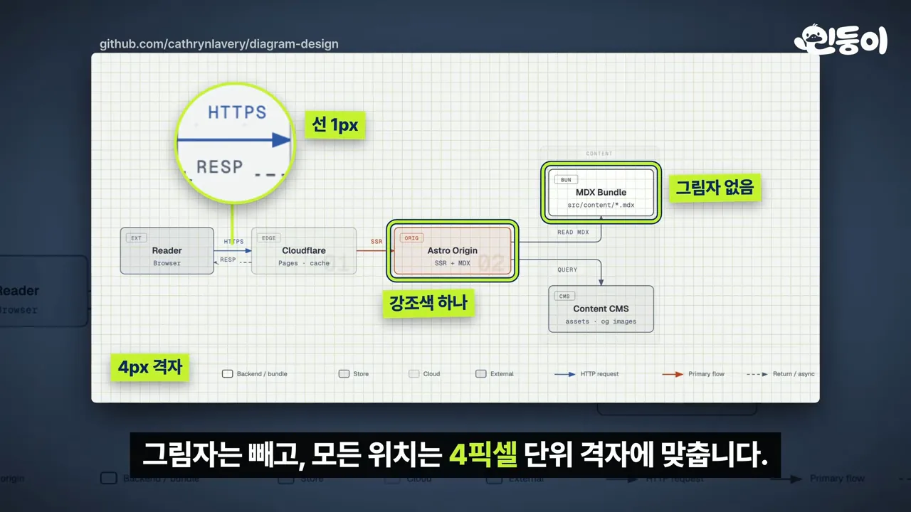
영상 도구: AutoClip · Concat
AutoClip
영상 쪽 도구도 둘 있어요. 하나는 별 1만 6천 개를 받은 AutoClip이에요. 긴 영상을 넣으면 하이라이트를 찾아 자막이 달린 세로형 숏폼으로 만들어 주는 무료 도구예요.
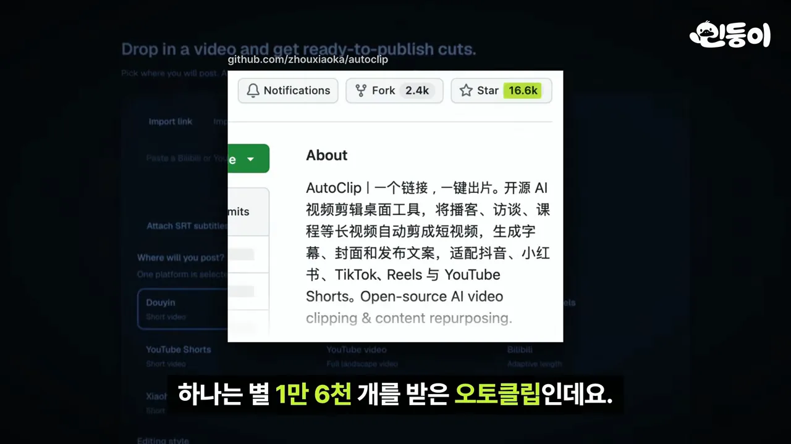
영상 파일은 내 PC에서 처리하고, AI 모델에는 자막 텍스트만 보내요. 아래 그림에서 PC와 AI 모델 사이를 오가는 건 종이 한 장, 곧 자막뿐이에요. 앱으로 직접 써도 되고 Claude Code에 연결해 작업을 맡겨도 돼요. 다운로드는 약 8만 회이고 한국어도 지원해요.
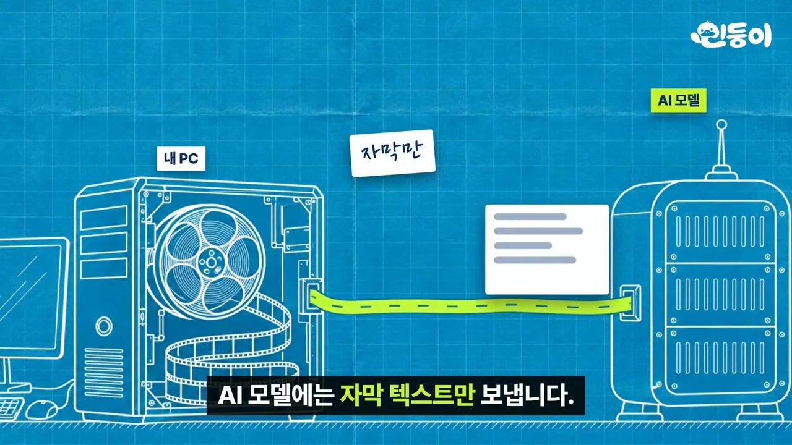
Concat
다른 하나는 별 2만 개를 받은 Concat이에요. 오늘 하루에만 별이 550개 늘었어요. 회원가입이나 워터마크 없이 쓸 수 있는, 캡컷을 대신할 오픈소스 영상 편집기예요.
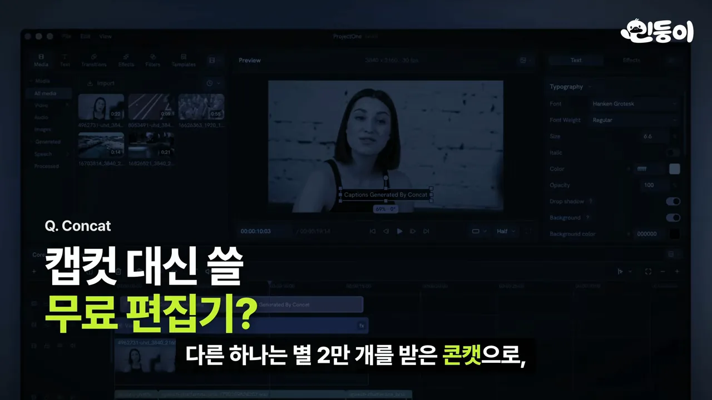
자동 자막 생성, 목소리 분리, 배경 제거 같은 AI 기능이 내 PC에서 돌아가요. Claude Code에 연결하면 편집부터 최종 내보내기까지 AI에게 맡길 수도 있어요. 화면에 연결 명령이 나와요.
claude mcp add concat -- /Applications/Concat.app/Contents/MacOS/concat --mcp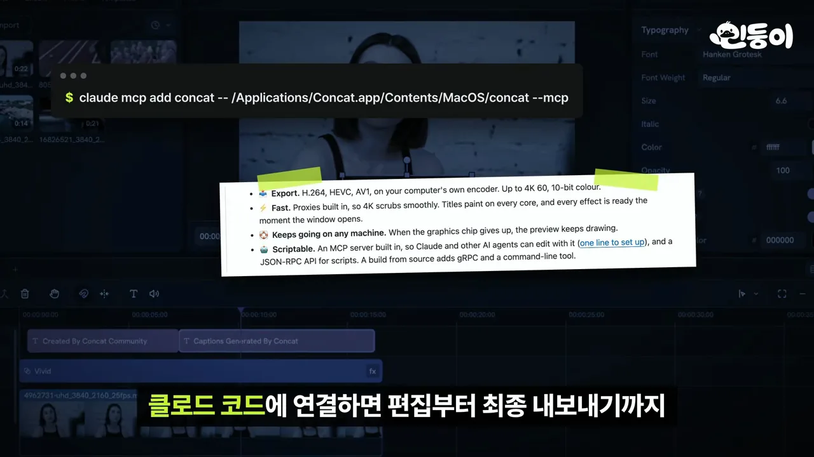
다만 아직 베타이고 앱에 개발자 서명이 없어요. 그래서 맥에서 설치하면 '확인되지 않은 개발자가 배포했기 때문에 열 수 없다'는 경고가 뜨고, 직접 허용해야 열려요. 화면 아래에는 격리 표시를 지우는 명령이 함께 나와요.
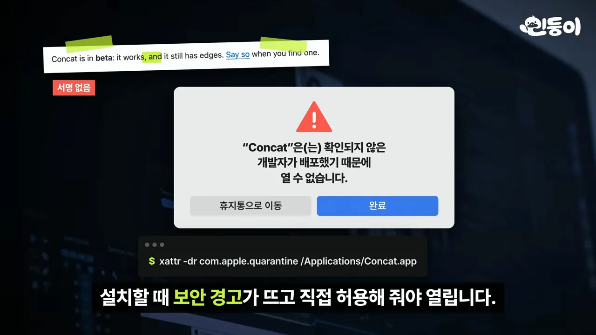
지난주 소개한 두 저장소, 이번 주에도
지난주에 소개한 두 저장소도 이번 주 트렌딩에 다시 올라왔어요.
Claude-BugHunter
Claude Code에 보안 취약점을 찾고 신고하는 방법을 가르치는 스킬 묶음이에요. 저장소 소개에는 '버그 헌팅과 외부 레드팀 작업용 Claude Code 스킬 묶음'이라고 적혀 있고, 스킬 85개, 슬래시 명령 16개, 공개된 취약점 보고서 패턴 681개가 들어 있대요.
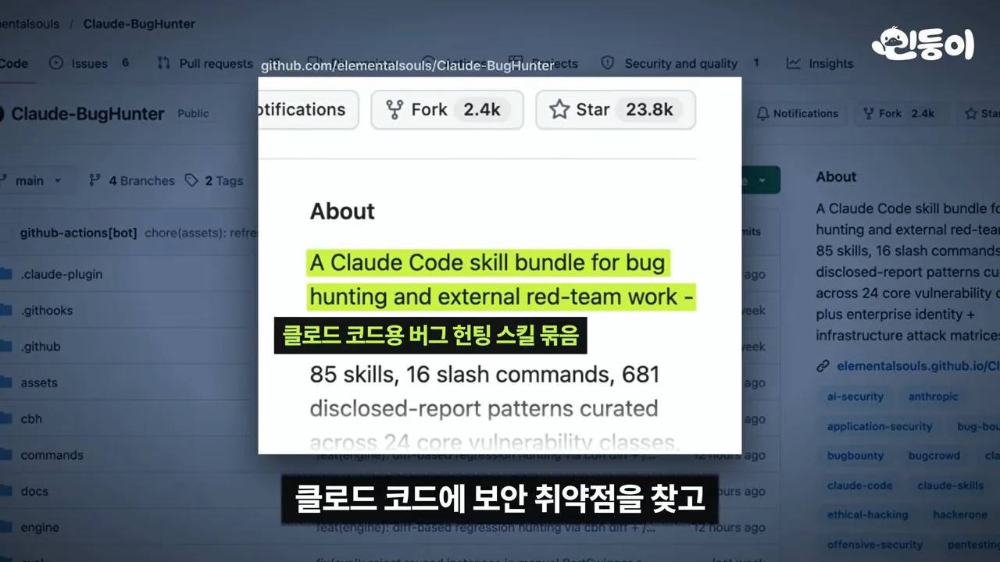
별은 불과 8일 만에 두 배 넘게 늘었어요. 화면의 막대는 11월 18일 10,636개, 11월 26일 23,564개예요.
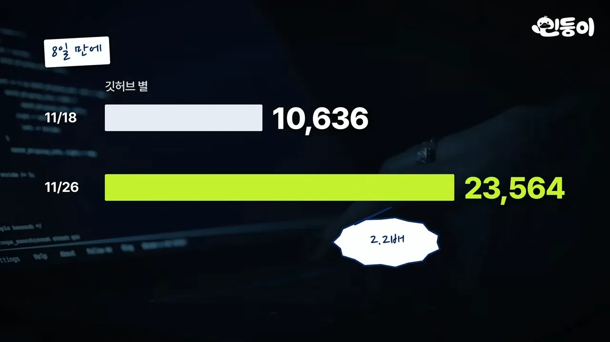
CLI-Anything
CLI-Anything도 여전히 인기가 많아요. 사람이 화면에서 직접 조작하던 GUI(Graphical User Interface) 프로그램에 명령어 인터페이스를 만들어, Claude Code 같은 AI가 직접 제어하게 해 주는 도구예요. 아래 그림에서 왼쪽은 사람이 마우스로 쓰는 GUI, 가운데 초록 상자가 CLI-Anything이 만들어 주는 연결부, 오른쪽이 키보드로 명령을 치는 AI예요.
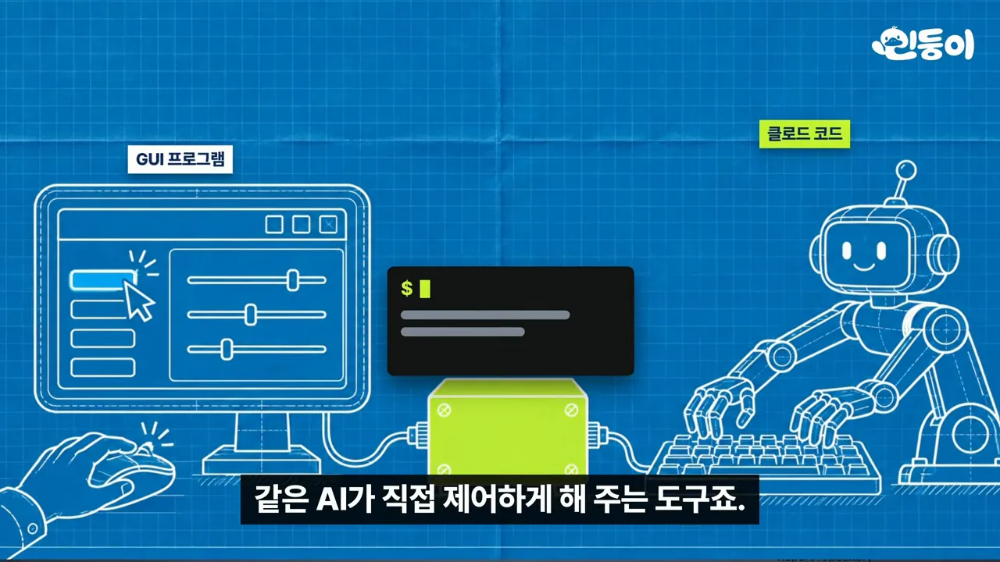
깃허브 별은 어느새 6만 6천 개까지 올라왔어요.